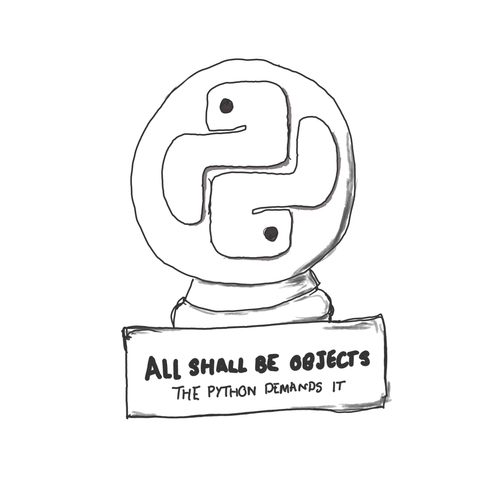

Programming Level-up
Lecture 1 - Introduction and Basic Python Programming
Table of Contents
- 1. Introduction
- 2. Python
- 2.1. Introducing Python
- 2.2. Types of data
- 2.2.1. Primitive data types
- 2.2.2. Primitive data type
- 2.2.3. Basic Math with primitives
- 2.2.4. Basic Math
- 2.2.5. BODMAS in Python
- 2.2.6. Basic Math – Quick exercise
- 2.2.7. Container data types/Data structures
- 2.2.8. An aside on Terminology
- 2.2.9. Lists
- 2.2.10. Lists – adding data
- 2.2.11. Lists – Quick Exercise
- 2.2.12. Dictionaries
- 2.2.13. Dictionaries
- 2.2.14. Dictionaries – adding data
- 2.2.15. Dictionaries – Quick Exercise
- 2.2.16. Tuples
- 2.2.17. Tuples
- 2.2.18. Sets
- 2.2.19. Sets – adding data
- 2.3. Conditional expressions
- 2.4. Iteration
- 2.4.1. For loop
- 2.4.2. For loop – break
- 2.4.3. For loop – continue
- 2.4.4. For loop – ranges
- 2.4.5. For loop – loop over collections
- 2.4.6. For loop – loop over collections
- 2.4.7. For loop – loop over collections
- 2.4.8. For loop – loop over collections
- 2.4.9. For loop – Quick Exercise
- 2.4.10. While loop
- 2.5. Functions
- 2.5.1. Functions
- 2.5.2. Functions
- 2.5.3. Example usage of a function
- 2.5.4. Functions – Quick Exercise
- 2.5.5. Re-usability with Functions
- 2.5.6. Re-usability with Functions
- 2.5.7. Named parameters
- 2.5.8. Named parameters
- 2.5.9. Optional/Default/Positional arguments
- 2.5.10. Optional/Default/Positional arguments
- 2.5.11. Optional/Default/Positional arguments
- 2.5.12. Recap on arguments
- 2.5.13. Function doc-strings
- 2.5.14. Multi-line docstrings
- 2.5.15. Understanding scope
- 2.5.16. Understanding scope
- 2.5.17. Understanding scope
- 2.5.18. Understanding scope
- 3. Exercise
- 4. What lies ahead
1. Introduction
1.1. Course introduction
1.1.1. What…? Why…?
- Programming is much more than the act of programming a small script. Even if you've programmed before, doing so for a research project requires a lot of rigour to ensure the results you're reporting are correct, and reproducible.
- There is so much surrounding the act of programming that it can get a little overwhelming. Things from setting up a programming environment to managing multiple experiments on the supercomputers can involve many languages and understanding of technologies.
- This course is designed to take you from not being able to program at all to being able to do it comfortably for your research and work.
1.1.2. What is this course going to teach me?
- Programming with the Python Programming Language.
- Basic syntax.
- Introduction to the basics of object oriented programming (OOP).
- Numerical computing with numpy/pandas/scipy.
- Doing your programming in a Linux-based Environment (GNU/Linux) and being
comfortable with the organisation of this Linux environment.
- Setting up a research (reproducible) environment.
- Executing experiments.
- Interacting with the Super-computers/clusters.
- Interaction with SLURM (management of jobs).
- Taking the results from a program you've created, be able to visualise them and
include them in reports/papers.
- LaTeX/Markdown.
- Plotting.
1.1.3. How the course will be delivered
- 2/3 hour sessions over the next 2 months.
- Throughout the lecture, there will be small exercises to try out what we've learnt. We will go through the answers to these exercises.
- At the end of the lecture we will have a larger exercise that will become more challenging. These exercises are not marked, but again, just an opportunity to try out what you've learnt. The best way to learn how to program is to program.
1.1.4. Rough timeline
- 2h on October 11th, 2021 from 10:30 a.m. to 12:30 a.m.
- 3h on October 15th, 2021 from 8:30 a.m. to 11:45 a.m.
- 2h on October 15th, 2021 from 1:30 p.m. to 3:30 p.m.
- 2h on October 22th, 2021 from 3:45 p.m. to 5:45 p.m.
- 3h on October 26th, 2021 from 8:30 a.m. to 11:45 a.m.
- 2h on November 12th, 2021 from 8:00 a.m. to 10 a.m.
- 3h on November 16th, 2021 from 1:00 p.m. to 4:15 p.m.
- 3h on November 24th, 2021 from 8:30 a.m. to 11:45 a.m.
1.1.5. Rough timeline
| Lecture | Topic | Description |
|---|---|---|
| 1 | Introduction | - Course introduction |
| - Basic Python programming | ||
| 2 | Python classes | - Introduction to OOP |
| 3 | Project management | - Creating/importing modules |
| - Anaconda/pip | ||
| 4 | Programming environments | - PyCharm |
| - Jupyter notebooks | ||
| 5 | Numerical computing | - Numpy |
| - Scipy | ||
| 6 | Numerical computing | - Pandas |
| - Visualisations | ||
| 7 | Basics of GNU/Linux | - Using the terminal |
| 8 | Bash scripting | |
| 9 | High performance computing | - SLURM |
| - Singularity | ||
| 10 | Reporting | - LaTeX |
| - Markdown |
1.2. Contact information
1.2.1. Where to find me
My name is Jay Morgan. I am a researcher work on Deep Learning in Astrophysics.
- Email:
jay.morgan@univ-tln.fr - Lecture slides and other contact on my website: https://pageperso.lis-lab.fr/jay.morgan/

2. Python
2.1. Introducing Python
2.1.1. Python

2.1.2. Python
- Python BMCOL
- Python is a high-level\footnoteframe{As we go through our lectures we'll understand what it means for the language to be /high-level/ and /interpreted/ and why that is helpful for us.} programming language created in 1991.
- While it is an old language, its become vastly popular thanks to its use in data science and other mathematics-based disciplines. While also being able to perform tasks such as GUI, web-development and much more.
- Because the language is high-level and interpreted, programmers can often find themselves more productive in Python than in other languages such as say C++.
- Python logo BMCOL
2.1.3. A first program
We're going to start with the 'Hello, World' program that prints Hello, World! to the
screen. In python this is as simple as writing:
print("Hello, World!") # this prints: Hello, World!
Results: # => Hello, World!
NOTE anything following a # is a comment and is completely ignored by the
computer. It is there for you to document your code for others, and most
importantly, for yourself.
2.1.4. Running this program
Before we can run this program, we need to save it somewhere. For this, will
create a new file, insert this text, and save it as <filename>.py, where
<filename> is what we want to call the script. This name doesn't matter for its
execution.
Once we have created the script, we can run it from the command line. We will get into the command line in a later lecture, but right now all you need to know is:
python3 <filename>.py
2.1.5. An alternative method of running python
You may notice that if you don't give python a filename to run, you will enter
something called the REPL.
Python 3.9.5 (default, Jun 4 2021, 12:28:51) [GCC 7.5.0] :: Anaconda, Inc. on linux Type "help", "copyright", "credits" or "license" for more information. >>>
REPL stands for READ, EXECUTE, PRINT, LOOP.
2.1.6. Variables
A variable is a symbol associated with a value. This value can differ widely, and we will take a look at different types of values/data later.
Neverthless, variables are useful for referring to values and storing to the results of a computation.
x = 1 y = 2 z = x + y print(z) # prints: 3 # variables can be /overwritten/ z = "hello, world" print(z) # prints: hello, world
Results: # => 3 # => hello, world
2.2. Types of data
2.2.1. Primitive data types
Primitive data types are the most fundamental parts of programming, they cannot be broken down.
"Hello" # string 1 # integer 1.0 # float True # Boolean (or bool for short)
2.2.2. Primitive data type
We can get the type of some data by using the type(...) function. For example,
print(type(5)) print(type(5.0)) x = "all cats meow" print(type(x))
Results: # => <class 'int'> # => <class 'float'> # => <class 'str'>
2.2.3. Basic Math with primitives
Using these primitive data types, we can do some basic math operations!
print(1 + 2) # Addtion print(1 - 2) # Subtraction print(1 * 2) # Multiplication print(1 / 2) # Division print(2 ** 2) # Exponent print(3 % 2) # Modulo operator
Results: # => 3 # => -1 # => 2 # => 0.5 # => 4 # => 1
2.2.4. Basic Math
Sometimes types get converted to the same type:
print(1.0 + 2) # float + integer = float
Results: # => 3.0
Even more interesting is with Booleans!
True + True
Results: # => 2
2.2.5. BODMAS in Python
Like in mathematics, certain math operator take precedence over others.
- B - Brackets
- O - Orders (roots, exponents)
- D - division
- M - multiplication
- A - addition
- S - subtraction.
To make the context clear as to what operations to perform first, use brackets.
(5 / 5) + 1 5 / (5 + 1)
Results: # => 2.0 # => 0.8333333333333334
2.2.6. Basic Math – Quick exercise
Write the following equation in python:
\((5 + 2) \times (\frac{10}{2} + 10)^2\)
Remember to use parentheses ( ) to ensure that operations take precedence over
others.
Your answer should come out as: 1575.0
2.2.7. Container data types/Data structures
Container data types or data structures, as the name suggests, are used to contain other things. Types of containers are:
- Lists
- Dictionaries
- Tuples
- Sets
[1, "hello", 2] # list {"my-key": 2, "your-key": 1} # dictionary (or dict) (1, 2) # tuple set(1, 2) # set
We'll take a look at each of these different container types and explore why we might want to use each of them.
2.2.8. An aside on Terminology
To make our explanations clearer and reduce confusion, each of the different symbols have unique names.
I will use this terminology consistently throughout the course, and it is common to see the same use outside the course.
[ ]brackets (square brackets).{ }braces (curly braces).( )parentheses.
2.2.9. Lists
A hetreogenious container. This means that it can store any type of data.
x = [1, "hello", 2]
Elements can be accessed using indexing [ ] notation. For example:
print(x[0]) # this will get the first element (i.e. 1) print(x[1]) # the second element (i.e. "hello") print(x[2]) # the third element (i.e. 2)
Results: # => 1 # => hello # => 2
notice how the first element is the 0-th item in the list/ we say that python is 0-indexed.
2.2.10. Lists – adding data
If we want to add items to the end of the list, we use the append function:
my_list = [] my_list.append("all") my_list.append("dogs") my_list.append("bark") print(my_list)
Results: # => ['all', 'dogs', 'bark']
2.2.11. Lists – Quick Exercise
- Create a list with 3 elements:
- "bark"
- "all"
- "dogs"
- Assign this to a variable with the name of your choice.
- Using the
printfunction, print out the 3rd, 1st and 2nd elements in that order.
2.2.12. Dictionaries
Dictionaries are a little different from lists as each 'element' consists of a key-pair value. Let's have a look at some examples where the dictionaries contains one element:
my_dictionary = {"key": "value"} my_other_dict = {"age": 25}
To access the value, we get it using [key] notation:
my_other_dict["age"]
Results: # => 25
NOTE keys are unique, i.e:
my_dictionary = {"age": 25, "age": 15} my_dictionary["age"]
Results: # => 15
2.2.13. Dictionaries
The key in the dictionary doesn't necessarily need to be a string. For example, in this case, we have created two key-pair elements, where the keys to both are tuples of numbers.
my_dictionary = {(1, 2): "square", (3, 4): "circle"} print(my_dictionary[(1, 2)])
Results: # => square
2.2.14. Dictionaries – adding data
If we want to add data to a dictionary, we simply perform the accessor method with a key that is not in the dictionary:
my_dict = {} my_dict["name"] = "James" my_dict["age"] = 35 print(my_dict)
Results:
# => {'name': 'James', 'age': 35}
2.2.15. Dictionaries – Quick Exercise
- Create a dictionary for the following address, and assign it a variable name
called
address:
| Key | Value |
|---|---|
| number | 22 |
| street | Bakers Street |
| city | London |
- Print out the address's street name using the
[ ]accessor with the correct key.
2.2.16. Tuples
my_tuple = (1, 56, -2)
Like lists, elements of the tuple can be accessed by their position in the list, starting with the 0-th element:
print(my_tuple[0]) # => 1 print(my_tuple[1]) # => 56 print(my_tuple[2]) # => -2
Results: # => 1 # => 56 # => -2
2.2.17. Tuples
Unlike lists, tuples cannot be changed after they've been created. We say they are immutable. So this will not work:
my_tuple[2] = "dogs" # creates an Error
Results: # => Traceback (most recent call last): File "<stdin>", line 1, in <module> File "/tmp/pyKdIIcx", line 18, in <module> File "<string>", line 1, in <module> TypeError: 'tuple' object does not support item assignment
2.2.18. Sets
Sets in Python are like tuples, but contain only unique elements.
You can use the set( ) function (more on functions later!), supplying a list, to create a set:
my_set = set([1, 2, 2, 2, 3, 4]) my_set
Results:
# => {1, 2, 3, 4}
Notice how there is only one '2' in the resulting set, duplicate elements are removed.
2.2.19. Sets – adding data
If we want to add data to a set, we use the .add() method. The element used as an
argument to this function will only be added to the set if it is not already in the
set.
my_set = set([]) my_set.add(1) my_set.add(2) my_set.add(1) print(my_set)
Results:
# => {1, 2}
2.3. Conditional expressions
2.3.1. If statement
If statements allow for branching paths of execution. In other words, we can execute some statements if some conditions holds (or does not hold).
The structure of a simple if statement is:
if <condition>:
<body>
x = 2 y = "stop" if x < 5: print("X is less than five") if y == "go": print("All systems go!!")
Results: # => X is less than five
2.3.2. If statement
In the previous example, the first print statement was only executed if the x < 5
evaluates to True, but in python, we can add another branch if the condition
evaluates to False. This branch is denoted by the else keyword.
x = 10 if x < 5: print("X is less than five") else: print("X is greater than or equal to five")
Results: # => X is greater than or equal to five
2.3.3. If statement – Quick Exercise 1
- Create a variable called
ageand assign the value of this variable35. - Create and
ifstatement that prints the square ofageif the value ofageis more than 24. - This if statement should have an else condition, that prints
agedivided by 2. - What is the printed value?
2.3.4. If statement
If we wanted to add multiple potential paths, we can add more using the elif
<condition> keywords.
Note: The conditions are checked from top to bottom, only executing the else if none
evaluate to True. The first condition that evaluates to True is executed, the rest
are skipped.
x = 15 if x < 5: print("X is less than five") elif x > 10: print("X is greater than ten") else: print("X is between five and ten")
Results: # => X is greater than ten
2.3.5. If statement
Sometimes, we might want to conditionally set a variable a value. For this, we can use an inline if statement. The form of an inline if statement is:
<value-if-true> if <condition> else <value-if-false>
x = 10 y = 5 if x > 5 else 2 print(x + y)
Results: # => 15
2.3.6. Boolean Logic
As we've seen, if statements are checking for conditions to evaluate to True or
False. In python we use various comparison operators to check for conditions that
evaluate to Booleans.
Comparison operators
<less than<=less than or equal to>greater than>=greater than or equal to==is equal tonotnegation
If we want to check for multiple conditions, we can use conjunctives or disjunctive operators to combine the Boolean formulas.
Conjunctives/Disjunctives
andall boolean expressions must evaluate to trueoronly one expression needs to be true
2.3.7. Boolean Logic
Using not you can invert the Boolean result of the expression.
print(not True)
Results: # => False
x = 10 if not x == 11: print("X is not 11")
Results: # => X is not 11
2.3.8. Boolean Logic
Let's take an example using the and keyword. and here is checking that x is above or
equal to 10 and y is exactly 5. If either of the conditions is False, python will
execute the else path (if there is one, of course!).
x = 10 y = 5 if x >= 10 and y == 5: z = x + y else: z = x * y print(z)
Results: # => 15
2.3.9. Boolean Logic
Here we see the use of the or keyword. If any of the conditions evaluates to True
then the whole condition evaluates to True.
x = 10 y = 5 if x < 5 or y == 5: print("We got here!") else: print("We got here instead...")
Results: # => We got here!
2.3.10. Boolean Logic
Note: or is short-circuiting. This means that if tests the conditions left-to-right,
and when it finds something that is True it stops evaluating the rest of the
conditions.
x = 10 if x < 20 or print("We got to this condition"): print("The value of x is", x)
Results: # => The value of x is 10
2.3.11. Boolean Logic
If your Boolean logic refers to a single variable, you can combine the logic without
the and and or. But its not always common.
For example,
x = 7 if x < 10 and x > 4: print("X is between 5 and 10")
Can be the same as:
x = 7 if 5 < x < 10: print("X is between 5 and 10")
Results: # => X is between 5 and 10
2.4. Iteration
2.4.1. For loop
Looping or iteration allows us to perform a series of actions multiple times. We are
going to start with the more useful for loop in python. The syntax of a for loop is:
for <variable_name> in <iterable>: <body>
for i in range(3): print(i)
Results: # => 0 # => 1 # => 2
2.4.2. For loop – break
The previous example loops over the body a fix number of times. But what if we wanted
to stop looping early? Well, we can use the break keyword. This keyword will exit the
body of the loop.
for i in range(10): if i > 5: break print(i)
Results: # => 0 # => 1 # => 2 # => 3 # => 4 # => 5
2.4.3. For loop – continue
A different keyword you might want to use is continue. Continue allows you to move/skip
onto the next iteration without executing the entire body of the for loop.
for i in range(10): if i % 2 == 0: continue print(i)
Results: # => 1 # => 3 # => 5 # => 7 # => 9
2.4.4. For loop – ranges
Instead of using continue like in the previous slide, the range function provides us
with some options:
range(start, stop, step)
In this example, we are starting our iteration at 10, ending at 15, but stepping the counter 2 steps.
for i in range(10, 15, 2): print(i)
Results: # => 10 # => 12 # => 14
2.4.5. For loop – loop over collections
For loops allow us to iterate over a collection, taking one element at a time. Take for example, a list, and for every item in the list we print its square.
my_list = [1, 5, 2, 3, 5.5] for el in my_list: print(el**2)
Results: # => 1 # => 25 # => 4 # => 9 # => 30.25
2.4.6. For loop – loop over collections
This kind of looping can work for tuples and sets, but as we have seen, dictionaries are a little different. Every 'element' in a dictionary consists of a key and a value. Therefore when we iterate over items in a dictionary, we can assign the key and value to different variables in the loop.
Note the use of the .items() after the dictionary. We will explore this later.
my_dict = {"name": "jane", "age": 35, "loc": "France"} for el_key, el_val in my_dict.items(): print("Key is:", el_key, " value is: ", el_val)
Results: # => Key is: name and the value is: jane # => Key is: age and the value is: 35 # => Key is: location and the value is: France
2.4.7. For loop – loop over collections
We could also loop over the keys in the dictionary using the .keys() method instead
of .items().
my_dict = {"name": "jane", "age": 35, "loc": "France"} for the_key in my_dict.keys(): print(the_key)
Results: # => name # => age # => loc
2.4.8. For loop – loop over collections
Or, the values using .values().
my_dict = {"name": "jane", "age": 35, "loc": "France"} for the_value in my_dict.values(): print(the_value)
Results: # => jane # => 35 # => France
2.4.9. For loop – Quick Exercise
- Create a list of elements:
- 2
- "NA"
- 24
- 5
- Use a
forloop to iterate over this list. - In the body of the
forloop, compute \(2x + 1\), where \(x\) is the current element of the list. - Store the result of this computation in a new variable \(y\), and then print y.
Note You cannot compute \(2x + 1\) of "NA", therefore you will to use an if statement
to skip onto the next iteration if it encounters this. Hint try: type(...) =!= str
2.4.10. While loop
A while loop is another looping concept like for but it can loop for an arbitrary
amount of times. A while loop looks to see if the condition is True, and if it is, it
will execute the body.
The syntax of the while loop is:
while <condition>:
<body>
i = 0 while i < 3: print(i) i = i + 1
Results: # => 0 # => 1 # => 2
2.5. Functions
2.5.1. Functions
Functions are a re-usable set of instructions that can take some arguments and possible return something.
The basic structure of a function is as follows:
def <function_name>(args*): <body> (optional) return
args*are 0 to many comma separated symbols.bodyis to be indented by 4 spaces.
This is only the function definition however. To make it do something, we must 'call' the function, and supply the arguments as specified in the definition.
def say_hello(): # function definition print("Hello, World!") say_hello() # calling the function
2.5.2. Functions
We've already seen some functions provided by Python.
print itself is a function with a single argument: what we want to print.
print("Hello, World!") # ^ ^ # | | # | user supplied argument # | # function name
set is another function that takes a single argument: a collection of data with which
to make a set:
set([1, 2, 2, 3, 4])
2.5.3. Example usage of a function
Let's make a function that takes two numbers and adds them together:
def my_addition(a, b): result = a + b return result x = 2 y = 3 z = my_addition(2, 3) # return 5 and stores in z print(z)
Results: # => 5
2.5.4. Functions – Quick Exercise
- Create a function called
my_square. This function should take one argument (you can call this argument what you like). - The body of the function should compute and return the square of the argument.
- Call this function with
5.556. - Store the result of calling this function, and print it.
- What is the result?
2.5.5. Re-usability with Functions
Functions are better illustrated through some examples, so let's see some!
name_1 = "john" name_2 = "mary" name_3 = "michael" print("Hello " + name_1 + ", how are you?") print("Hello " + name_2 + ", how are you?") print("Hello " + name_3 + ", how are you?")
The above is pretty wasteful. Why? Because we are performing the exact same operation multiple times, with only the variable changed.
2.5.6. Re-usability with Functions
By abstracting the actions we want to perform into a function, we can ultimately reduce the amount of code we write. Be a lazy programmer!
name_1 = "john" name_2 = "mary" name_3 = "michael" def say_hello(name): print("Hello " + name + ", how are you?") say_hello(name_1) say_hello(name_2) say_hello(name_3)
In this example, we've used the function as defined with the def pattern to write
the print statement once. Then, we've called the function with each variable as its
argument.
2.5.7. Named parameters
We've seen in previous examples that, when we create a function, we give each of the arguments (if there are any) a name.
When calling this function, we can specify these same names such as:
def say_hello(name): print("Hello,", name) say_hello("Micheal") say_hello(name="Micheal")
Results: # => Hello, Micheal # => Hello, Micheal
2.5.8. Named parameters
By specifying the name of the parameter we're using with the called function, we can change the order
def say_greeting(greeting, name): print(greeting, name, "I hope you're having a good day") say_greeting(name="John", greeting="Hi")
Results: # => Hi John I hope you're having a good day
2.5.9. Optional/Default/Positional arguments
When we call a function with arguments without naming them, we are supplying them by position.
def say_greeting(greeting, name): print(greeting, name, "I hope you're having a good day") say_greeting(#first position, #section position)
The first position gets mapped to variable name of greeting inside the body of the
say_greeting function, while the second position gets mapped to name.
2.5.10. Optional/Default/Positional arguments
Sometimes when creating a function we may want to use default arguments, these are arguments that are used if the call to the function does not specify what their value should be. For example.
def say_greeting(name, greeting="Hello"): print(greeting, name, "I hope you're having a good day") say_greeting("John") say_greeting("John", "Hi") # supply greeting as positional argument
Results: # => Hello John I hope you're having a good day # => Hi John I hope you're having a good day
2.5.11. Optional/Default/Positional arguments
Note if you supply a default argument in the function definition, all arguments after this default argument must also supply a default argument.
So, this won't work:
def say_greeting(name="Jane", greeting): print(greeting, name, "I hope you're having a good day") say_greeting("John", "Hi")
2.5.12. Recap on arguments
# defining the function def say_greeting(name, greeting) # no default arguments def say_greeting(name, greeting="Hello") # greeting is a default argument def say_greeting(name="Jane", greeting="Hello") # both arguments have a default # calling the functions say_greeting("John", "Hi") # both arguments are provided by position say_greeting(name="John", greeting="Hi") # arguments are supplied by name say_greeting(greeting="Hi", name="John") # the position of named arguments do not matter
2.5.13. Function doc-strings
To make it clear for a human to quickly understand what a function is doing, you can add an optional doc-string. This is a string that is added directly after the initial definition of the function:
def my_function(x, y): """I am a docstring!!!""" return x + y
Some common use cases for docstrings are explaining what the parameters are that it expects, and what it returns.
2.5.14. Multi-line docstrings
If your explanation is a little longer than a line, a multiline docstring can be
created as long as you're using """ three quotation marks either side of the string
def my_function(x, y): """ This is my realllly long docstring that explains how the function works. But sometimes its best not to explain the obvious """ return x + y
2.5.15. Understanding scope
In this example we have two scopes which can be easily seen by the indentation. The first is the global scope. The second scope is the scope of the function. The scope of the function can reference variables in the larger scope. But once the function scope exits, we can no longer reference the variables from the function.
x = 10 def compute_addition(y): return x + y print(compute_addition(10)) print(x) print(y) # does not work
Results: # => 20 # => 10
2.5.16. Understanding scope
Even though we can reference the global scope variable from the scope of the function, we can't modify it like this:
x = 10 def compute_addition_2(y): x = x + 5 # error local variable referenced before assignment return x + y print(compute_addition_2(10))
2.5.17. Understanding scope
If we really wanted to reference a variable in a global scope and modify its value,
we could use the global keyword. Doing this makes the
function output something different every time it is called. This can make it
difficult to debug incorrect programs.
x = 10 def compute_addition_2(y): global x x = x + 5 return x + y print(compute_addition_2(10)) print(x) print(compute_addition_2(10))
Results: # => 25 # => 15 # => 30
2.5.18. Understanding scope
In almost all cases, avoid using global variables. Instead pass the variables as parameters. This can reduce a source of potential errors and ensure that if a function is called multiple times, the output can be more consistent and expected.
x = 10 def compute_addition_3(x, y): x = x + 5 return x + y print(compute_addition_3(x, 10)) print(x) print(compute_addition_3(x, 10))
Results: # => 25 # => 10 # => 25
3. Exercise
3.1. Library system
3.1.1. Use what you've learnt!
We're going to create a library system to help locate and lookup information about books. For example, we want to know the author of book called 'Moby Dick'.
To create this system, we are going to do it in stages. First, we will want to create our database of books:
| Title | Author | Release Date |
|---|---|---|
| Moby Dick | Herman Melville | 1851 |
| A Study in Scarlet | Sir Arthur Conan Doyle | 1887 |
| Frankenstein | Mary Shelley | 1818 |
| Hitchhikers Guide to the Galaxy | Douglas Adams | 1879 |
Our database is going to be a list of dictionaries. Where each dictionary is a row from this table. For example, one of the dictionaries will have the key "title" and a value "Moby Dick".
Create this database and call it db.
3.1.2. Locating Books
- Create a function called
locate_by_titlethat takes the database to look through, and the title to look up as arguments. - This function should check each dictionary, and if the title is the same as what was searched for, it should return the whole dictionary.
- Test this function by calling the
locate_by_titlefunction withdband"Frankenstein". You should get{"title": "Frankenstein", "author": ...}.
Note you should include docstrings to describe the arguments to the function, and what it will return.
3.1.3. Selecting a subset
Now that we can find books by the title name, we also want to find all books that were released after a certain data.
- Create a function called
books_released_afterthat takes two arguments: the database to look through, and the year. - This function should look through the database, if it finds a book that was released after the year, it should add it to a list of books that is returned from this function.
- Test this function by calling
books_released_afterwithdband1850. This function call should return a list containing three dictionaries. The first entry should be 'Moby Dick' and the section should be 'A Study in Scarlet', etc.
3.1.4. Updating our database
Oh no! 'Hitchhikers Guide to the Galaxy' was released in 1979 not 1879, there must have been a typo. Let's create a function to update this.
Create a function called
update, that takes 5 arguments: 1) the database to update, 2) the key of the value we want to update 3) the value we want to update it to 4) the key we want to check to find out if we have the correct book and 5) the value of the key to check if we have the correct book.update(db, key="release year", value=1979, where_key="title", where_value="Hitchhikers Guide to the Galaxy")
3.1.5. Extended exercise
- In the previous steps we created functions
locate_by_titleandbooks_released_after. These two functions are similar in a way that they are selecting a subset of our database (just by different criteria). - For this harder exercise, can we create a single function called
querythat allows us to do bothlocate_by_titleandbooks_released_after. An example call to this
queryfunction may look like:results = query(db, where_key="title", where_value="Moby Dick", where_qualifier="exactly")
where_qualifiershould accept strings like"exactly","greater than", and"less than".
4. What lies ahead
4.1. What lies ahead
4.1.1. What lies ahead
- Now that we've seen some of the basic syntax, we will continue on and learn how to
work more with data. This means we're going to revisit lists/sets/dictionaries, and
look at methods like
.items(),.values(), etc, and find out why they look slightly different to the functions we've created in this lecture! - We're going to look at object-oriented programming (OOP) in python and learn how to use the style of programming to best effect.